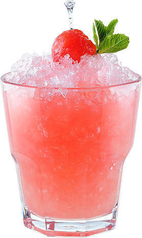

Арбузный коблер

Вообще, напиток появился на свет в качестве извинения. Коктейль был придуман владельцем таверны, просящим прощение у жены за трудоголизм профессиональным для себя способом. Прощение было получено, и коктейль продолжает оставаться невероятно популярным.